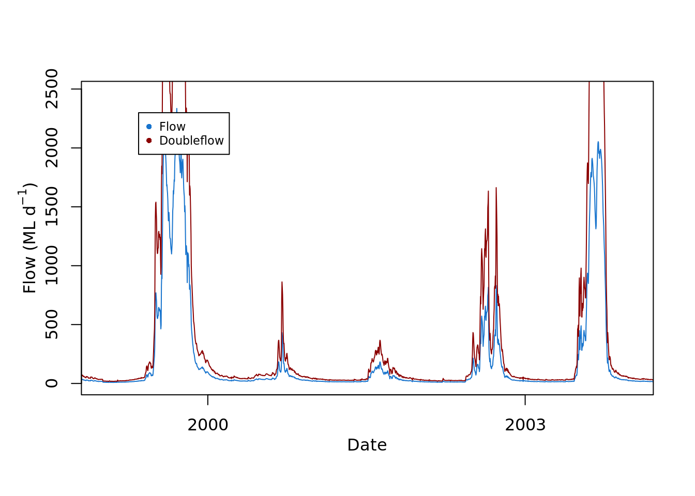
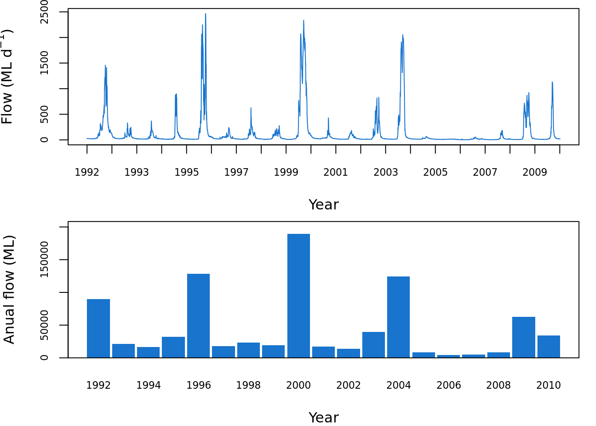

Learning to use the base plot
As an alternative to ggplot and tidyverse, there are other basic plotting functions that you might prefer. This module takes you through a few basic plotting functions. It starts in the same way as the tidyverse module, using the same dataset.
Visualising Module 1 Flow Data
Setting up
Creating an R Studio project
- Open R Studio
- Go File -> New Project -> New Directory -> New Project
- Directory name: ENVT3362_workshop_2
- Create project as a subdirectory of: Wherever you store your ENVT3362 files!
- Click Create project
- Download the spreadsheet for this workshop here
- Move this to your ENVT3362_workshop_2 directory
Importing and formatting the data
Import the spreadsheet
- The
pathargument is relative to you R Studio project file sheetspecifies which Excel sheet to read
Inspect the data
head()prints the first few observations- What data type is
date?
## # A tibble: 6 × 2
## date totalDischarge
## <chr> <dbl>
## 1 1992-01-01 26.6
## 2 1992-01-02 26.8
## 3 1992-01-03 27.3
## 4 1992-01-04 27.0
## 5 1992-01-05 26.5
## 6 1992-01-06 26.8Graphing with base plot
Simply using the ‘plot’ function will make a default points plot. The plot does not look good, however, the function is convenient for checking your data quickly.
Call plot()

plot defaults to a points plot, but we can quickly change it to a line plot using the argument type = "l".

Just as with ggplot, we can access the R database of standard colours.

By default it is selecting x and y from columns 1 and 2.

If you had several columns, you could choose which to plot on the y axis. We can make a new variable, say, double flow. A new line can be appended to the original plot using the lines function.
doubleflow = envFlow$totalDischarge * 2
plot(x=envFlow$date, y=envFlow$totalDischarge ,type="l",col="dodgerblue3")
lines(x=envFlow$date, y=doubleflow, col="red4")
To plot a subset of the data, use the square brackets to select indices, say, points 100 to 800.
doubleflow = envFlow$totalDischarge * 2
plot(x=envFlow$date[100:800], y=envFlow$totalDischarge[100:800] ,type="l",col="dodgerblue3")
Similarly, the limits of the axes can be set with the xlim and ylim arguments.
Call plot() and then start again
The base plot is convenient, however, to make it look good, sometimes it is easier to plot it as a blank and add each element in separately. Just as “l” was the argument for lines, “n” is an argument for no plot. We can even turn off the axes and titles.

Then we can add all the elements back in. The plot is still open so it will plot everything to the blank plot.
plot(envFlow,type="n"
,axes=F
,xlab="", ylab=""
,xlim = c(date("2000-01-01"),date("2005-01-01"))
)
lines(envFlow$date,envFlow$totalDischarge,col="dodgerblue3")
lines(envFlow$date,doubleflow,col="red4")
box(bty="o")
Axis and mtext
We can put the axis and axis labels back in using the functions ‘axis’ and ‘mtext’. They both have the side argument:
1 = bottom, 2 = left, 3 = top, 4 = right
The font size defaults to 1, but we can adjust it using the argument cex. The distance from the axis is set using line. the expression function allows formatting of text, such as subscripts and superscripts.
plot(envFlow,type="n"
,axes=F
,xlab="", ylab=""
,xlim = c(date("2000-01-01"),date("2005-01-01"))
)
lines(envFlow$date,envFlow$totalDischarge,col="dodgerblue3")
lines(envFlow$date,doubleflow,col="red4")
box(bty="o")
mtext(side = 1,text="Date",line=2)
mtext(side = 2,text=expression("Flow (ML d"^-1*")"),line=2)
axis(2,cex=0.7)
The date axis needs to be formatted, then the axis.Date function is used. This step is clunky compared to ggplot.
plot(envFlow,type="n"
,axes=F
,xlab="", ylab=""
,xlim = c(date("2000-01-01"),date("2005-01-01"))
)
lines(envFlow$date,envFlow$totalDischarge,col="dodgerblue3")
lines(envFlow$date,doubleflow,col="red4")
box(bty="o")
mtext(side = 1,text="Date",line=2)
mtext(side = 2,text=expression("Flow (ML d"^-1*")"),line=2)
axis(2,cex=0.7)
x.axis<-as.Date(seq(min(envFlow$date),max(envFlow$date),by=3*365),format="%Y")
axis.Date(at=x.axis,side=1,cex=0.7)
Legend
Add a legend using the legend function. You can search for its details. In this case, topleft is the position, inset by 0.1; the legend argument is the text, col is the sequence of colours, and pch is the symbol.
plot(envFlow,type="n"
,axes=F
,xlab="", ylab=""
,xlim = c(date("2000-01-01"),date("2005-01-01"))
)
lines(envFlow$date,envFlow$totalDischarge,col="dodgerblue3")
lines(envFlow$date,doubleflow,col="red4")
box(bty="o")
mtext(side = 1,text="Date",line=2)
mtext(side = 2,text=expression("Flow (ML d"^-1*")"),line=2)
axis(2,cex=0.7)
x.axis<-as.Date(seq(min(envFlow$date),max(envFlow$date),by=3*365),format="%Y")
axis.Date(at=x.axis,side=1,cex=0.7)
legend("topleft", inset=0.1
,legend=c("Flow","Doubleflow")
,col=c("dodgerblue3","red4")
,pch=16
,cex = 0.7)
Add a polygon
We can add a polygon that represents the threshold above, say, 500 ML. The polygon function draws a polygon of any shape, by listing a sequence of the x and y values of a polygon. For example, imagine
it started at 0,0,
then you drew a line along the x axis to x = 10, y still = 0,
then you drew a line up from x still = 10 and y = 3,
then backwards along the x direction from y still = 3, x = 0 again.
The polygon joins all of these points. These could also be expressed as a matrix
x=c(0,1,1,0)
y=c(0,0,1,1)
this.matrix<-matrix(ncol = 2
,nrow= 4
,data=c(x,y)
)
colnames(this.matrix)=c("x","y")In our flow plot, we use dates as the x values and the range 0 to 500 ML.
The adjustcolor function allows us to make a new colour, as a variable called ‘polygoncolour’. The argument alpha sets the opacity, where 0 is completely transparent and 1 is completely opaque.
If we stick it all together:
plot(envFlow,type="n"
,axes=F
,xlab="", ylab=""
)
polygoncolour<-adjustcolor("red",alpha=0.25)
polygon(x = c( envFlow$date[which(envFlow$date=="1992-01-01")]
,envFlow$date[which(envFlow$date=="2010-12-31")]
,envFlow$date[which(envFlow$date=="2010-12-31")]
,envFlow$date[which(envFlow$date=="1992-01-01")]
)
,y=c(50,50,550,550)
,col=polygoncolour
,lty = 0)
lines(envFlow$date,envFlow$totalDischarge,col="dodgerblue3")
lines(envFlow$date,doubleflow,col="red4")
box(bty="o")
mtext(side = 1,text="Date",line=2)
mtext(side = 2,text=expression("Flow (ML d"^-1*")"),line=2)
x.axis<-as.Date(seq(min(envFlow$date),max(envFlow$date),by=3*365),format="%Y");
axis.Date(at=x.axis,side=1,cex=0.7)
axis(2,cex=0.7)
legend("topleft", inset=0.1
,legend=c("Flow","Doubleflow")
,col=c("dodgerblue3","red4")
,pch=16 )
Make an annual column chart
We can make an annual summary then plot it as a column chart. The years of the date column can be isolated by formatting the $date column with the format function, and setting the argument to "%Y", which means year.
The rowsum function sums rows of a matrix (there is also a function called colsum). The first argument is the matrix column to be summed. The second argument is how to group the rows that are summed, i.e. it will look for values that are the same. Here we can make a new matrix called envFlow.by.year.
The barplot function creates a column chart. The height argument is the matrix to plot. The beside argument is set to TRUE so that there are separate columns for each year. The names.arg argument sets the labels of the x axis. The other arguments are for formatting, which you can change as you like.
envFlow.by.year<-rowsum(x=envFlow$totalDischarge
,group=format(envFlow$date,"%Y") )
barplot(envFlow.by.year,beside = TRUE
,space=0.1
,col="dodgerblue3"
,border = NA
,ylim = c(0,max(envFlow.by.year)*1.1)
,cex.axis = 0.7,cex.names = 0.7,
,names.arg = rownames(envFlow.by.year )
,xlab = "Year"
,ylab = "Anual flow (ML)"
)
box(bty="o")
Make a multi-plot figure
You can make one figure that has several plots in it. One way to do this is to use the mfrow function. This sets a blank grid where the figures will be written. The arguments are the number of rows and columns that the figures are written into. To put a figure in a particular spot in this blank grid, the mfg function is used. The arguments in this function also correspond to the row and column. You can add white space around each figure using the mar function. Its arguments correspond to the number of lines below, left, above and right of the figure.
For example, to make two figures above and below, in two rows, use mfrow 2,1. Alternatively, to make two figures left and right, in two columns, use mfrow 1,2.
par(mfrow=c(2,1))
par(mfg=c(1,1))
par(mar=c(4,4,0.5,1))
plot(envFlow,type="n"
,axes=F
,xlab="", ylab=""
,xlim = c(date("1992-01-01"),date("2010-12-31"))
)
lines(envFlow$date,envFlow$totalDischarge,col="dodgerblue3")
box(bty="o")
mtext(side = 1,text="Year",line=3)
mtext(side = 2,text=expression("Flow (ML d"^-1*")"),line=3)
axis(2,cex.axis=0.7)
x.axis<-as.Date(seq(min(envFlow$date),max(envFlow$date),by=1*365),format="%Y")
axis.Date(at=x.axis,side=1,cex.axis=0.7)
par(mfg=c(2,1))
par(mar=c(4,4,0.5,1))
barplot(height=envFlow.by.year,beside = T
,space=0.1
,col="dodgerblue3"
,border = NA
,ylim = c(0,max(envFlow.by.year)*1.1)
,cex.axis = 0.7,cex.names = 0.7,
,names.arg = rownames(envFlow.by.year )
,xlab = "Year"
,ylab = "Anual flow (ML)"
)
box(bty="o")
par(mfrow=c(1,2))
par(mfg=c(1,1))
par(mar=c(4,4,1,1))
plot(envFlow,type="n"
,axes=F
,xlab="", ylab=""
,xlim = c(date("1992-01-01"),date("2010-12-31"))
)
lines(envFlow$date,envFlow$totalDischarge,col="dodgerblue3")
box(bty="o")
mtext(side = 1,text="Year",line=3)
mtext(side = 2,text=expression("Flow (ML d"^-1*")"),line=3)
axis(2,cex.axis=0.7)
x.axis<-as.Date(seq(min(envFlow$date),max(envFlow$date),by=1*365),format="%Y")
axis.Date(at=x.axis,side=1,cex.axis=0.7)
par(mfg=c(1,2))
par(mar=c(4,4,1,1))
barplot(height=envFlow.by.year,beside = T
,space=0.1
,col="dodgerblue3"
,border = NA
,ylim = c(0,max(envFlow.by.year)*1.1)
,cex.axis = 0.7,cex.names = 0.7,
,names.arg = rownames(envFlow.by.year )
,xlab = "Year"
,ylab = "Anual flow (ML)"
)
box(bty="o")